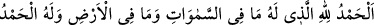
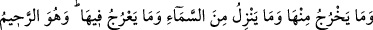
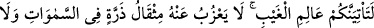
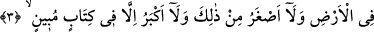
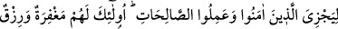
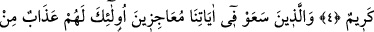
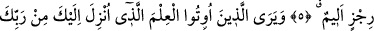

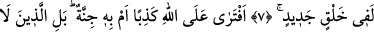
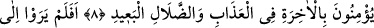
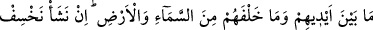
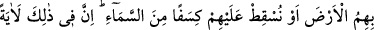
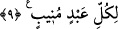
HİÇBİR ŞEY
O’NDAN GİZLİ KALMAZ
Bismillâhirrahmânirrahîm
Rahmân ve Rahîm olan Allah’ın adıyla.
1. Hamd, göklerde ve yerde bulunanların hepsinin sahibi olan Allah’a mahsustur.
Âhirette de hamd O’na mahsustur. O, hikmet sahibidir, (her şeyden) haberi olandır.
2. Yerin içine gireni ve ondan çıkanı, gökten ineni, oraya çıkanı bilir. O,
esirgeyendir, bağışlayandır.
3. İnkârcılar: Kıyâmet bize gelmeyecek, dediler. De ki: Hayır! Gaybı bilen